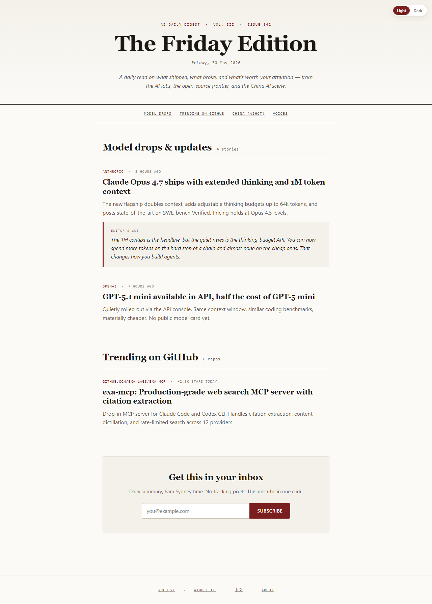
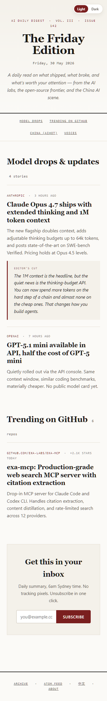
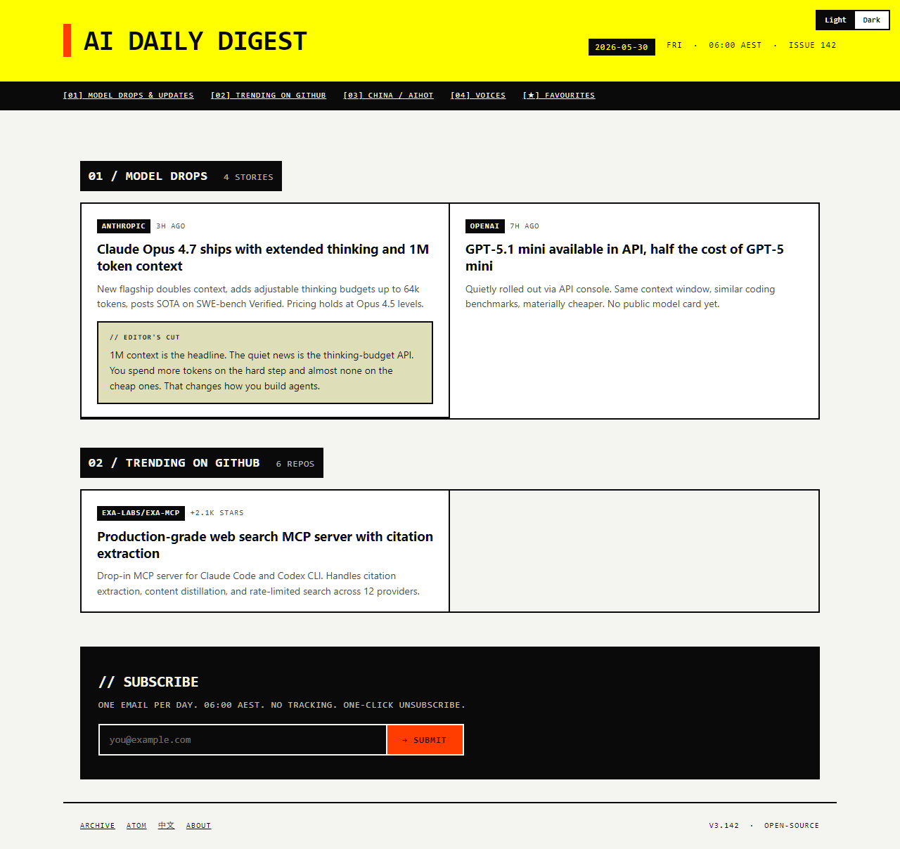
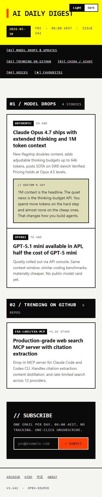
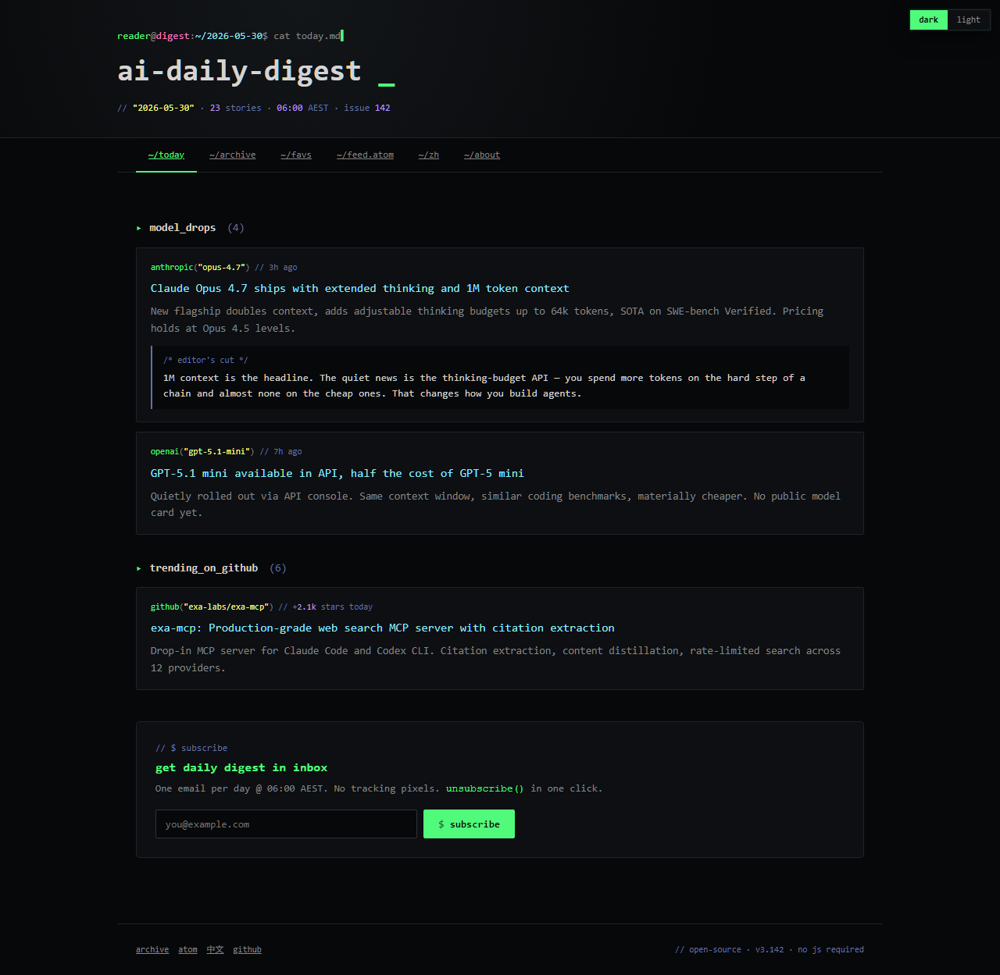
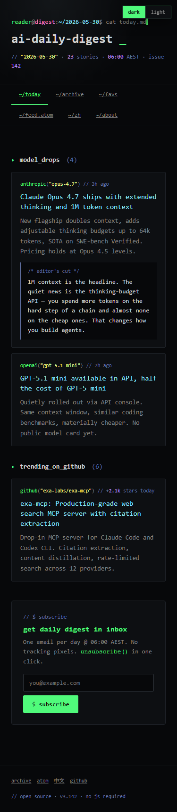
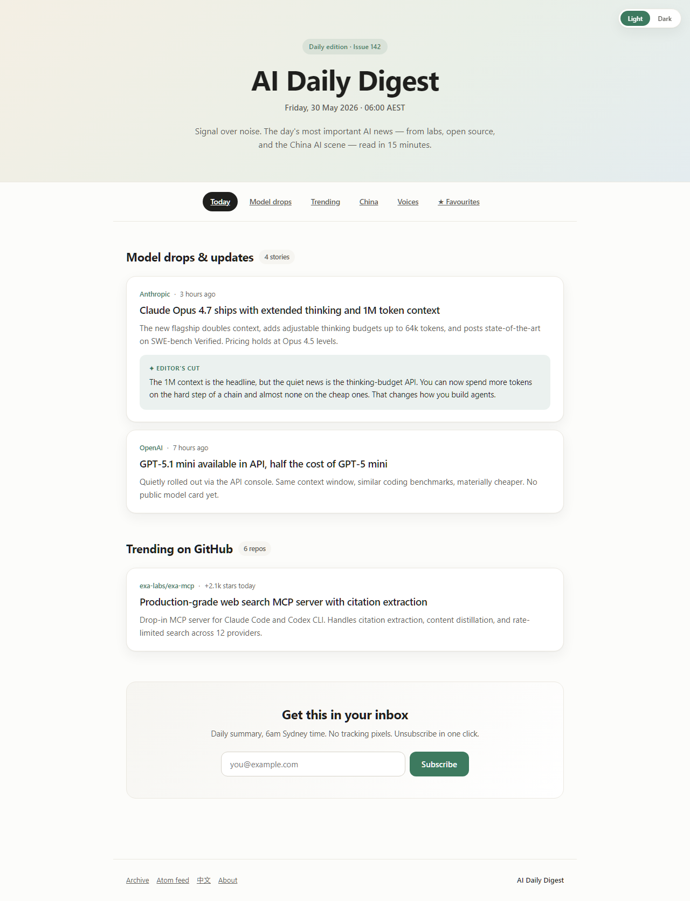
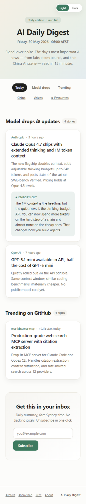

Editorial / Magazine
NYT-Wirecutter / Substack premium. Serif display, oxblood single accent, mono metadata, square corners, content-first hierarchy. Editor's Cut as pull-quote.
For readers who treat news as a daily ritual. The cut is the centrepiece.


Brutalist / no-bullshit
Linear marketing + Ben Holliday. Zero radius, hard 2px borders, hazard-yellow masthead, signal-orange accent. Mono chrome, geometric sans body.
For readers who keep Hacker News open in another tab. Tools, not entertainment.


Cyber / Terminal
Dracula-derived. JetBrains Mono everywhere, syntax-highlight palette, shell-prompt masthead with blinking cursor. Editor's Cut as /* comment */ block.
For the r/LocalLLaMA / model-trafficker audience. Closest match to the product's sources.


Soft contemporary
Modern, friendly. System fonts, sage-green accent (not SaaS-blue), warm off-white bg, soft three-colour hero gradient, 12px card radius, micro-lift hover.
For broader audience — PMs, designers, AI-curious technical readers.